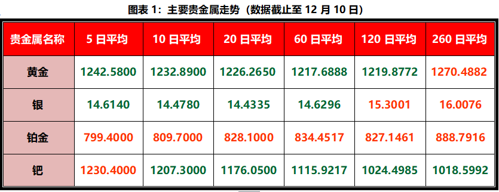
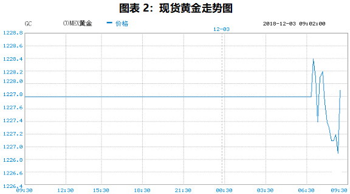
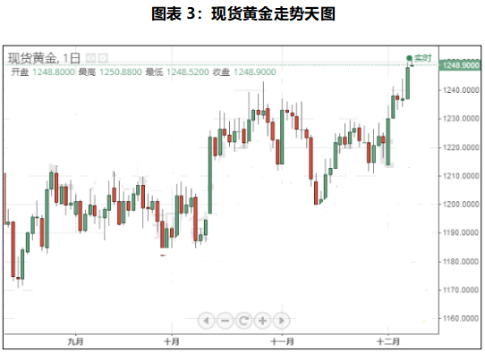

华为CFO被捕事件撼动市场 黄金价格突破1250关口
一、主要贵金属表现

市场观点
周一（12月10日）亚市早盘，国际现货黄金位于1249.10美元/盎司水平。上周金价(1254.60,2.00,16%)稳步上扬，得益于美元的疲软，当周上涨2.17%，创下3月以来最大单周涨幅。
而本交易日开盘金价继续上扬至1250.88美元/盎司，为7月11月以来首次突破该1250关口,为7月11日以来最高水平。
周一（12月10日）亚市盘初，美股期货再度重挫，道指期货大跌逾250点，周末中国外交部副部长召见美国驻华大使、抗议华为首席财务官被捕之事，这令市场避险情绪再度升温，从而对金价构成支撑。与此同时，受上周五疲弱非农的影响，美元仍然承压。
黄金方面，上周末段，市场受孟晚舟被拘捕、美元下跌等多重影响，市场避险情绪上升，黄金大涨。现货黄金周五盘中最高上探至1250.04美元/盎司，已上测1250关口，单周上涨2.17%，录得8月以来最大的周涨幅。
中国外交部副部长乐玉成周末紧急召见美国驻华大使布兰斯塔德，就华为技术有限公司首席财务官孟晚舟被拘押一事提出严正交涉和强烈抗议，称如有必要将“作出进一步反应”。

天图显示，现货黄金持续震荡上行，金价早盘触及1250美元。技术面走势依旧较为强势，KD以及RSI指标在触及超买水平之后有望继续走高，且云图上行云也有朝北运动的趋势。与此同时，MA均线涨势也较为坚挺，这也为黄金提供技术面支撑。金价上行首先将测试4月11日来下降趋势的50%百分比位在1262美元附近的阻力。
黄金短线走势较为强势，市场持续受疲软非农数据的影响，MA均线呈多头排列趋势，且离散程度暗示，金价仍有进一步上涨的空间。此外，云图上行云的整体走势依旧较为强劲，这也暗示金价短线走势偏上行。

周一重点关注
07：50 日本第三季度实际/名义GDP季终值、季率/年化季率终值
意大利上议院将对预算案进行投票
15：00 德国10月季调后贸易帐
16：00 欧盟法院对英国能否单边撤回脱欧决定作出判决
17：30 英国10月工业产出年月率；10月商品贸易账
20：15 欧洲央行银行监管委员会委员Ignazio Angeloni出席一场讨论会
 详情
详情